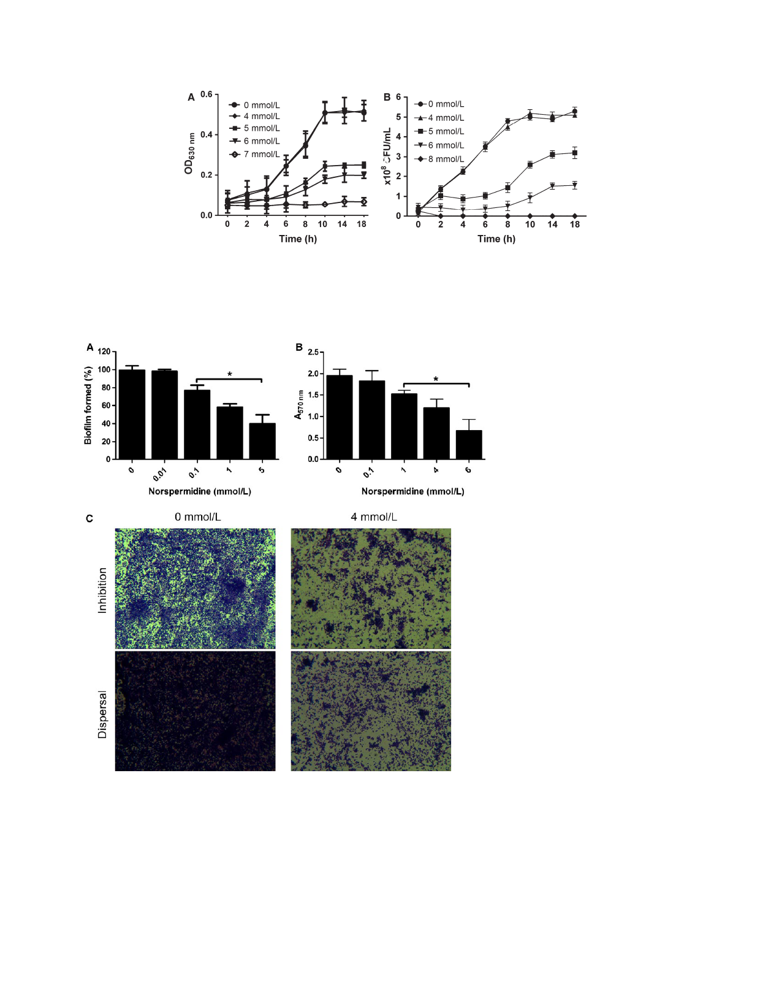

Effects of Norspermidine on P. aeruginosa Biofilm
L. Qu et al.
Figure 1. PAO1 planktonic cell growth with norspermidine. (A) Kinetic planktonic cell growth (optical density). Cells grown overnight were treated
with 0, 4, 5, 6, and 7 mmol/L norspermidine, and every 2 h cells were carefully transferred to another microtiter plate for total 18 h, and OD630 nm
was read. (B) Planktonic cell growth (CFU). PAO1 cells grown overnight were treated with 0, 4, 5, 6, and 8 mmol/L norspermidine, and every 2 h cells
were diluted and spiral plated on blood agar plates. Error bars represent SD.
Figure 2. The effect of norspermidine
against PAO1 biofilm. (A) Biofilm formation.
Overnight culture was treated with
0–5 mmol/L norspermidine for 24 h. The
volume of biofilm was determined by crystal
violet assay. Error bars represent SD. (B)
Biofilm eradication. Twenty-four hour
mature biofilms were cultured overnight
with norspermidine at concentrations
ranging from 0 to 6 mmol/L and the
quantification of biofilm formation
determined by crystal violet assay. *P < 0.05
versus untreated control. Error bars represent
SD. (C) Representative images
(magnification, 10 × 100) of PAO1 biofilm
treated with norspermidine, and the effects
of norspermidine were assessed by crystal
violet staining.
≤4 mmol/L norspermidine did not show bactericide effect
on the planktonic cells (Fig. 1B).
Antibiofilm effect of norspermidine
To evaluate the potential clinical application of norsper-
midine, we tested whether norspermidine effectively
inhibited biofilm formation or eradicated 24 h mature
biofilms of standard strain PAO1 (Fig. 2A–C) and clinical
isolates (Table 2). The effect of norspermidine on biofilms
was evaluated by crystal violet assay. Biofilm biomass was
checked by taking absorbance at 570 nm.
Inhibitory activities of norspernidine on PAO1 were
dose dependent. Norspermidine significantly decreased
406
© 2016 The Authors. MicrobiologyOpen published by John Wiley & Sons Ltd.